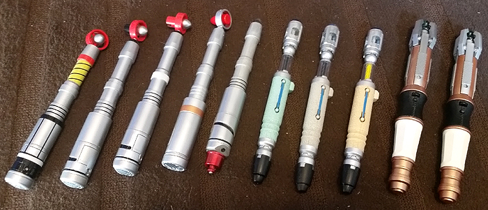

.jpg)
The sonic screwdriver made its first appearance in the serial Fury from the Deep, written by
Victor Pemberton. It was used thereafter by the Second Doctor as a multi-purpose tool, with occasional
variations in appearance over the course of the series.
Its abilities and overall appearance varied greatly during the classic series. The name implies that it operates
through the use of sound waves to exert physical forces on objects remotely. During the Second Doctor's tenure,
it functioned much as its name implied—using sonic waves to dismantle equipment or to bypass locks. In addition,
it was used as a welding torch in Episode Five of The Dominators. In the audio commentary for The Sea Devils,
Michael Briant claims to have suggested it as a one-off gadget in 1968.
During the Third Doctor's tenure, producer Barry Letts was adamant that the device not become a cure-all for
the series, and limited its use to avoid writers becoming over-reliant on it. During this time, the device
underwent significant design changes. In The Sea Devils, the Doctor used it to detonate landmines; Michael E.
Briant explains that this was feasible, stating that the sonic waves shook the mines. In The Three Doctors the
sonic screwdriver is almost unrecognisable, being a unique, one-use prop with a plastic red spherical head. In
the DVD commentary, Letts himself remarks on the thickness of the prop and the fact that it belies the idea
that it was the regular one, prompting Katy Manning to question whether it was indeed a sonic screwdriver.
This was due to the serial being produced out of transmission order: the original sonic screwdriver prop went
missing during the recording of Carnival of Monsters, requiring a new prop to be built for the rest of the
season; The Three Doctors was recorded after Carnival, but set before it, so the screwdriver could be seen to
revert to its previous appearance for one story after The Three Doctors before receiving a more permanent
redesign thereafter.
The sonic screwdriver was written out of the series late in season 19, in the Fifth Doctor serial The
Visitation. It is destroyed by a Terileptil to prevent the Doctor from escaping a holding cell; in response,
the Doctor sorrowfully remarked, "I feel as if you've just killed an old friend." Eric Saward later explained
in a 2005 DVD interview that this was done on the instructions of producer John Nathan-Turner. Saward had
written out the sonic screwdriver, believing that the Doctor had "a cupboard full of them" in the TARDIS. On
the basis that a device that could help in any situation was very limiting for the script, Nathan-Turner
decided that it would not return. The Tenth Doctor joked about the Fifth Doctor's lack of sonic screwdriver
in the mini-episode Time Crash, commenting that he "went hands-free" and could "save the universe using a
kettle and some string." The device did not appear again for the remainder of the original series.
In the Doctor Who TV Movie (1996) and The Night of the Doctor (2013), the Eighth Doctor was seen to have a
new sonic screwdriver with a telescopic mechanism: similar to its predecessors but with subtle differences such
as a gold/brass band on the handle, a flat base and a red emitter tip.
A redesigned sonic screwdriver appears in the new series, with a blue light in addition to the
sound effect. In its first incarnation, the prop used in the new series was fragile and prone to breakage. Over
the course of the next two years, the props were continually repaired and modified, with some additions being a
new thumb slider design and different colours of wires used in the clear channel when extended.
For Series 4 (2008), a new design of Screwdriver was commissioned by the BBC. Nick Robatto was hired to make
two new props. These featured the final slider design, and redesigned body ridges, among other smaller changes.
This design debuted in 2008's "Partners in Crime" and continued to be used until the Screwdriver's ultimate
destruction in 2010's "The Eleventh Hour". This later design has gained the nickname "Series 3-4 Sonic"
(relating to the fact that at the start of Series 3, in "Smith and Jones", the first Sonic Screwdriver was
supposedly destroyed), even though strictly speaking it first appeared in Series 4.
In "The Eleventh Hour", the malfunctioning sonic screwdriver is destroyed when the Doctor tries to
signal the Atraxi ships. The Doctor later receives a new one, which emerges from the newly regenerated TARDIS
console. The Eleventh Doctor's sonic screwdriver is larger than its predecessor; it has a green light and metal
claws that extend with a flick of the wrist. It is shown to have been created by the TARDIS as part of its
automatic regeneration.
In "A Christmas Carol", the Doctor advises a young Kazran Sardick to pursue romance while implying that in a
similar situation in his own past he had instead gone to his room to "design a new kind of screwdriver." Also
in that episode, the sonic screwdriver gets split into two pieces, one of which ends up inside a flying shark.
The remaining piece is said to be signalling its other half in an effort to repair itself. The Doctor uses this
to send a signal through the half inside the sky shark to open up the clouds. Afterwards, the half not in the
shark is left with Kazran Sardick. The Doctor tells Kazran that he can call him for help using the Sonic;
though Kazran declines to do so. The Doctor had duplicates of this screwdriver, which he continued to use
throughout his travels.
For the 50th anniversary special, "Day of the Doctor", another version was seen in the hands of John Hurt's
"War Doctor". The design was similar to the one used by Tom Baker's Fourth Doctor. This time the halo and
bullet tip had been removed, replaced by a red light as well as a large red dial added to the base.
Character-options released a version of this sonic screwdriver on 23 November 2013 at London's ExCel
labelling it "The Other Doctor's Sonic". It was established as a plot point in that episode that the
sonic screwdrivers employed by various Doctor incarnations all use the same software, something the War Doctor
exploited by running a calculation over a course of several centuries with the Tenth and Eleventh Doctors
seeing the calculation completed through their models. It is also directly implied after the fact that the
sonic screwdriver has actually been a part of every doctor's retinue, despite its disappearance for doctors
six & seven; the Tenth Doctor says to the Gallifreyan high command, as all thirteen doctors are about to change
history by saving the planet, that the calculations for doing what's about to be done have been "running all my
lives." In addition, when combined, the screwdrivers of the War, Tenth, and Eleventh Doctor could create a
sonic force field blast to repel and destroy a Dalek.